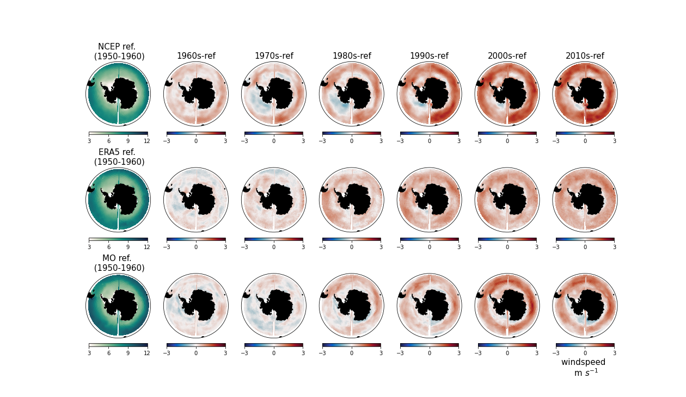
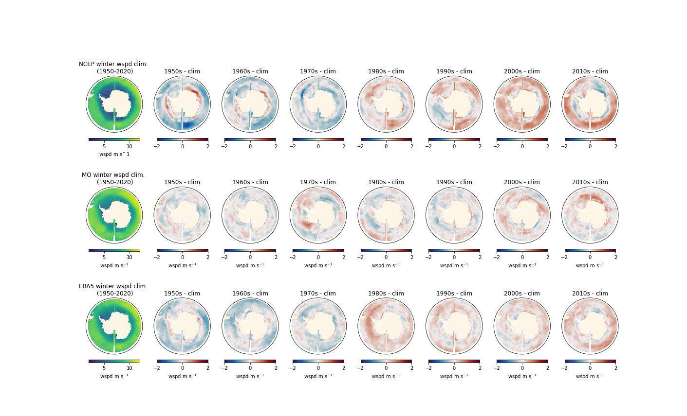
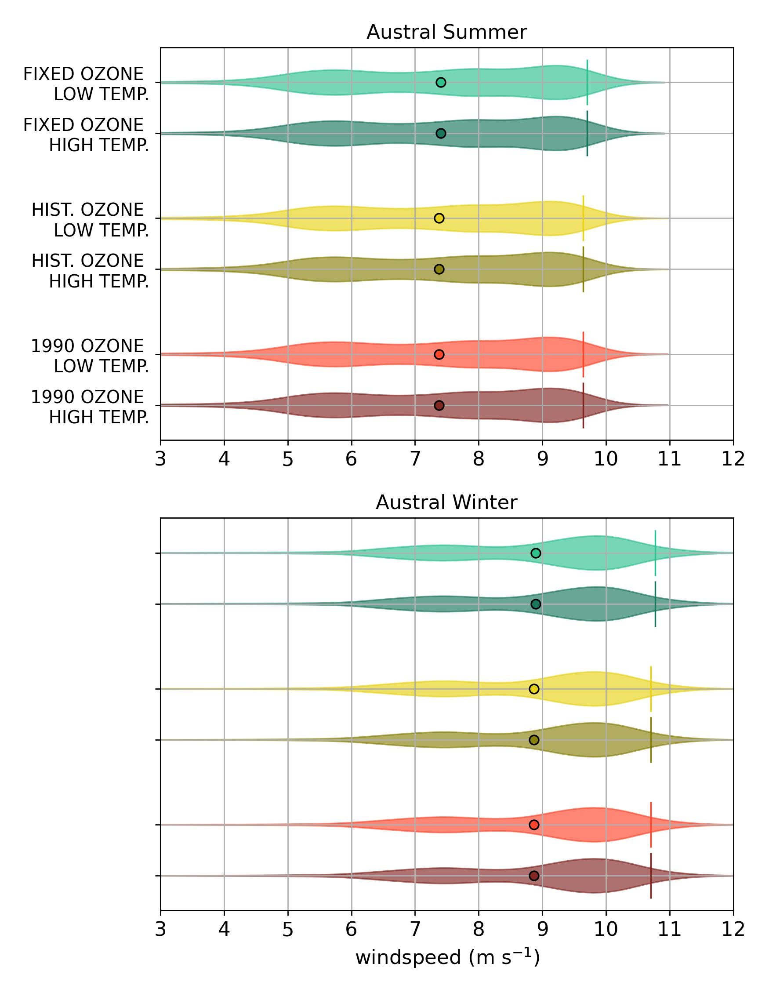
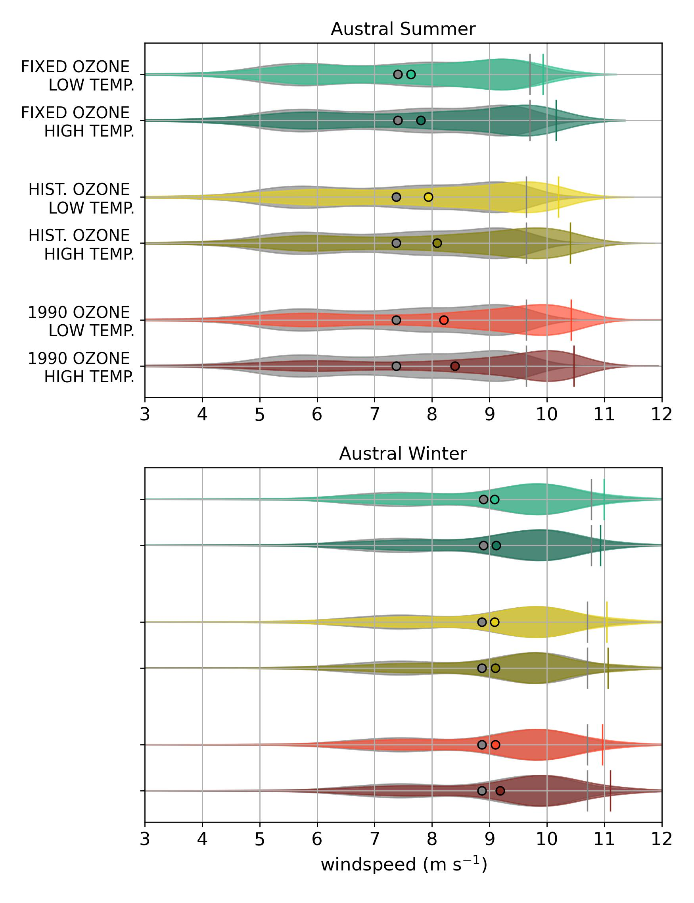
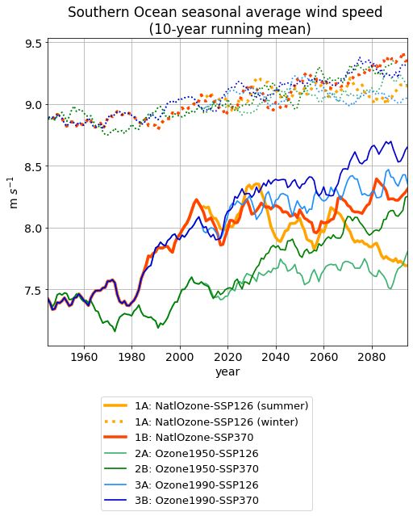
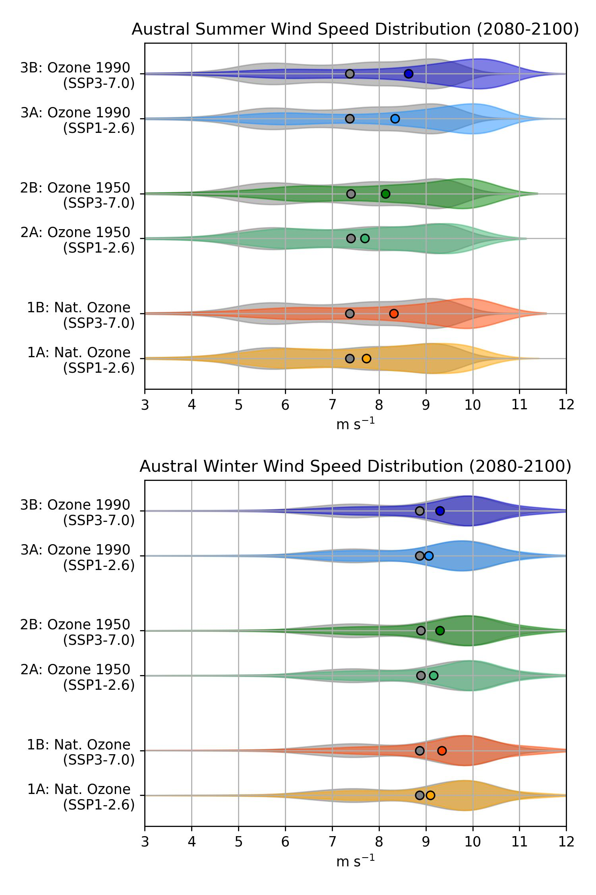

class: center, middle .title[Understanding the Changing Role of Stratospheric Ozone in Modifying the Southern Ocean Wind Structure] <!-- .subtitle[] --> .author[Tereza Jarníková, David Willis, Steven Rumbold, Colin Jones, Corinne Le Quéré] <br/> .institution[RoSES, ORCHESTRA and ENCORE Annual Science Meeting] <br/> .institution[University of East Anglia] <br/> .date[July 12, 2022] <br/> <br/> xx - appropriate to add logos: Tyndall, Met Hadley, UEA --- name: background class: center ##Background (draft) -xx - find appropriate illustratory figure - Thomson 2011? <br/> -ODS > vertical temperature structure > change in wind shear > change in windspeed / distribution, esp in summer --- name: background class: center ##Broader Research Objective (draft) -run 6 ozone and SSP scenarios to untangle role of ozone and greenhouse gas emission in warming and windspeed increases and resultant changes in SO carbon cycling from 1940-2100 --- name: background class: center ##Guiding Questions for Today's Presentation <br/> <br/> 1. How do changes in Southern Ocean wind patterns in the Met Office ESM-derived wind product compare to those in ERA5 and NCEP? <br/> <br/> 2. How are the Southern Ocean wind patterns and temperature distributions projected to change over the coming century under different ozone and SSP scenarios? --- name: model class: center ##Part 1: about the Hadley ESM model xx-consult with Steve. highlight colleagues from Hadley centre, representative model image --- name: model class: center ##Comparing wind wpeeds between three atmospheric products  all 3 wind products show comparable climatologies, but NCEP low compared to ERA5/MO <br/> strong measurable increases starting in 1990<br/> xx-increase font-size, reproject (potentially show 1950-1960 and then decadal increases after) --- name: model class: center ##Comparing wind wpeeds between three atmospheric products  winter windspeed increases more subtle <br/> xx-increase font-size --- name: model class: center ##Wind Velocity Directionality: Summer <img style="width:50%" src="./figs_2022_JUL_CELOS/download.png"> <img style="width:50%" src="./figs_2022_JUL_CELOS/download-1.png"> MO and ERA5 have comparable wind directionality - dominance of westerly and northwesterly winds, with southeasterly winds more represented in MO; both show comparable increases from 1950 to present-day. --- name: model class: center ##Wind Velocity Directionality: Winter <img style="width:50%" src="./figs_2022_JUL_CELOS/download-2.png"> <img style="width:50%" src="./figs_2022_JUL_CELOS/download-3.png"> MO and ERA5 have comparable wind directionality - increased westerly wind dominance in winter as opposed to summer. MO again has less westerly dominance --- name: model class: center ##Part 1: Quantitative Windspeed Timeseries Summary <img style="width:82%" src="./figs_2022_JUL_CELOS/windzonal.jpg"> Summer increases larger than winter ones, MO and ERA5 products quantitatively comparable, even when broken down by sector, throughout timeseries, NCEP consistently underestimates MO/ERA5 by significant amounts (up to 1 m/s) --- name: background class: center ##Part 2: Running Model Scenarios Using MetOffice ESM output, we will run 6 climate/ozone scenarios from 1940-2100: <br/> <br/> <br/> --- name: background class: center ##Historical PDF of a Southern Ocean Wind Climatology: 1940-1960  <br/> As expected, from 1940-1960 wind magnitudes are almost identical between 6 scenarios - winter winds are stronger and somewhat less variable. --- name: background class: center ##Historical Southern Ocean Wind Climatology: 1940-1960 <br/> As expected, from 1940-1960 wind magnitudes are almost identical between 6 scenarios - winter winds are stronger and somewhat less variable. --- name: background class: center ##Present-day: 2010-2030 <img style="width:47%" src="./figs_2022_JUL_CELOS/wspd_2010-2030.jpg"> <br/> large increases in sum wind clim. (1A/1B is real world), almost none in no-ozone scenario. --- name: background class: center ##Looking to the mid-century: 2040-2060  <br/> going forward, combination of high-ODS, high CO2 scen. has highest windspeed SSP starts mattering/ not much change in winter --- name: background class: center ##End of century scenarios: 2080-2100 <img style="width:47%" src="./figs_2022_JUL_CELOS/wspd_2080-2100.jpg"> <br/> subtle: under ssp 1-2.6 with normal ozone evolution, wspd actually decreases to end --- name: background class: center ##Summary of Projected Southern Ocean Wind Speed Changes .left-column[  ] .right-column[] --- name: background class: center ##Future steps runs